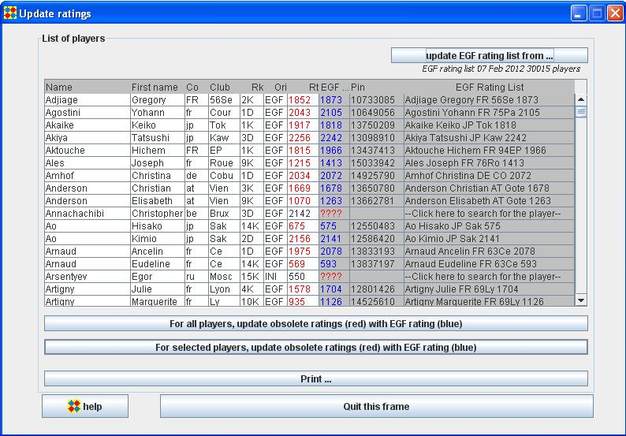

The left part (white background) of the "List of players" panel shows the players list of the tournament.
The right part (grey background) shows the players as they are in the EGF rating list.
OpenGotha finds in the rating list the rated player corresponding to the tournament player.
Search is first made by EGF Pin, and if the EGF Pin is not found, a search is made by name and first name.
If a player is found, it is shown.
If no player is found, a red "????" is displayed in EGF Rt column.